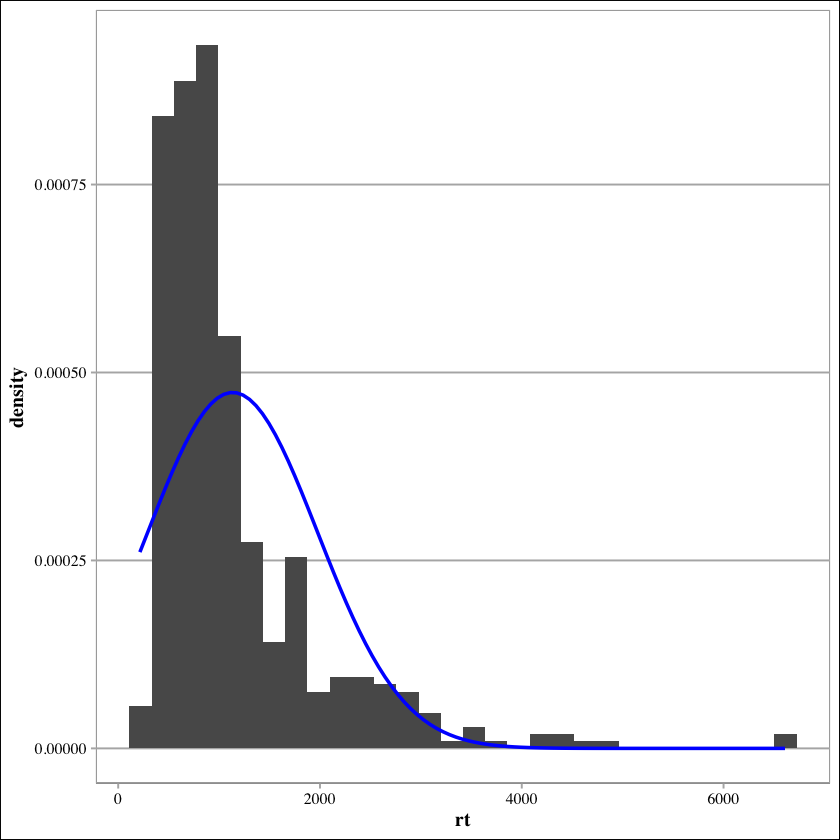
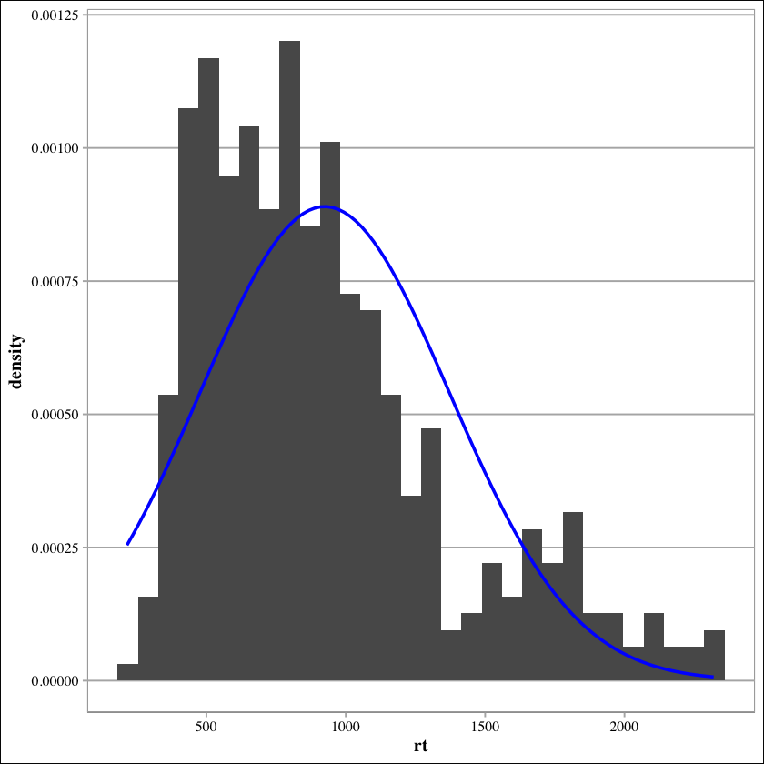
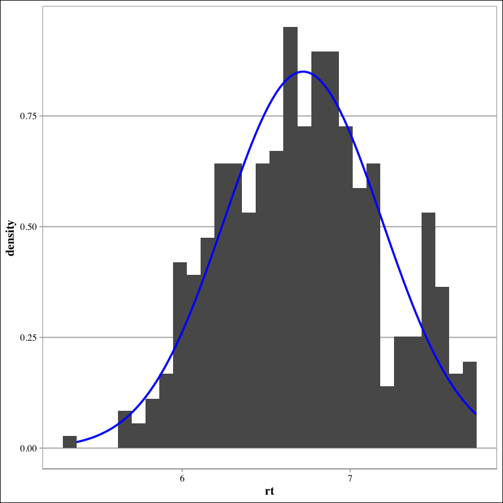
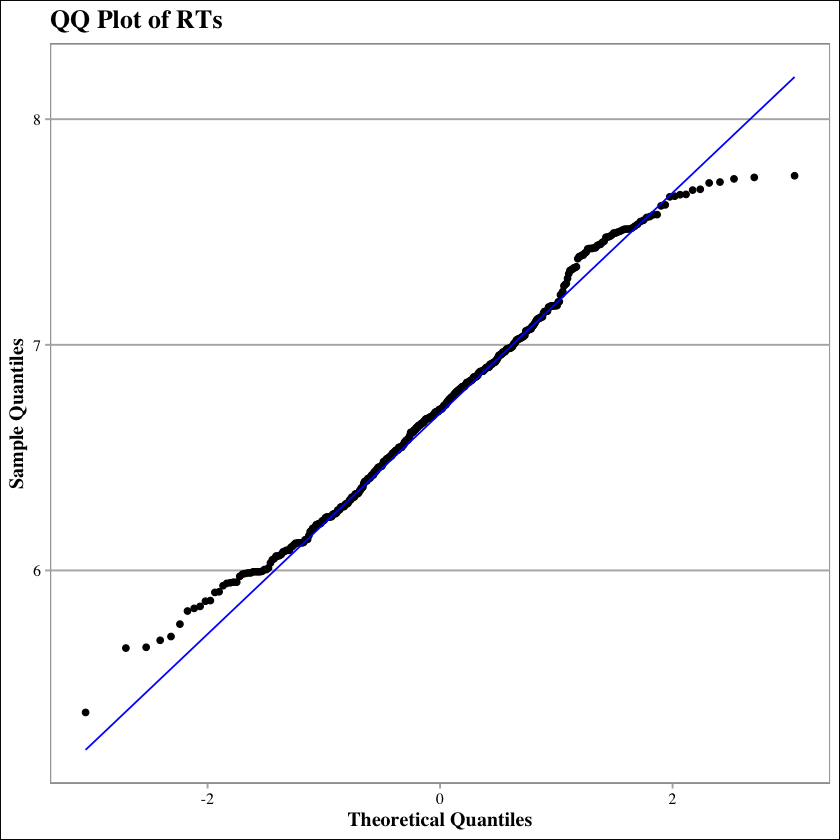
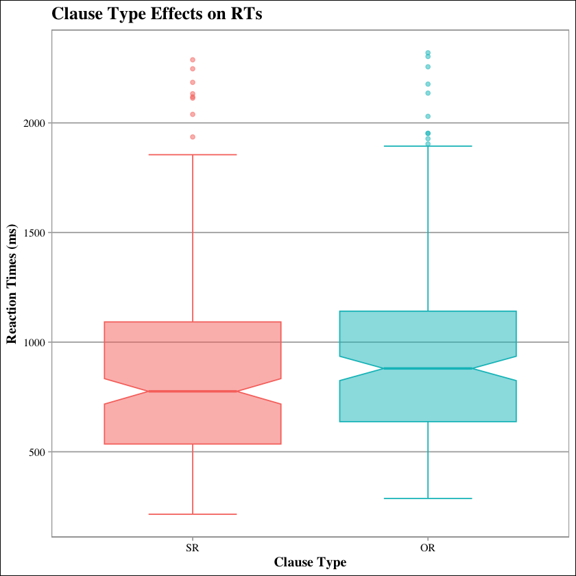
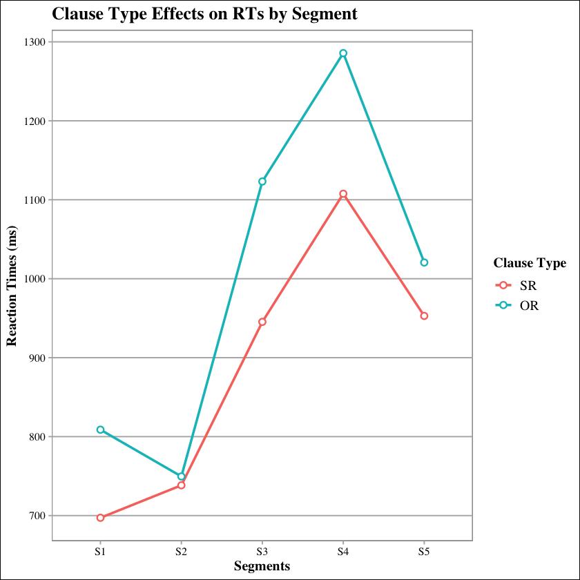
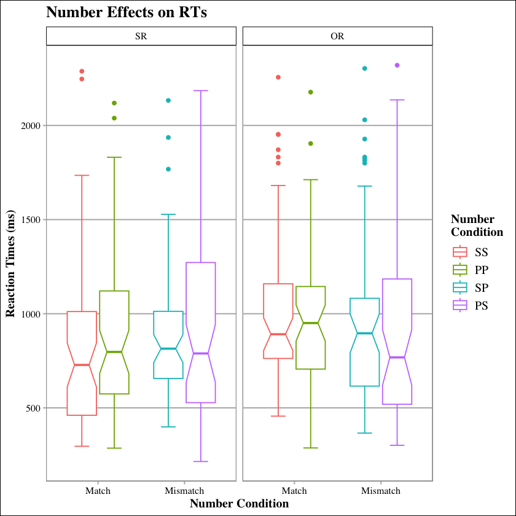
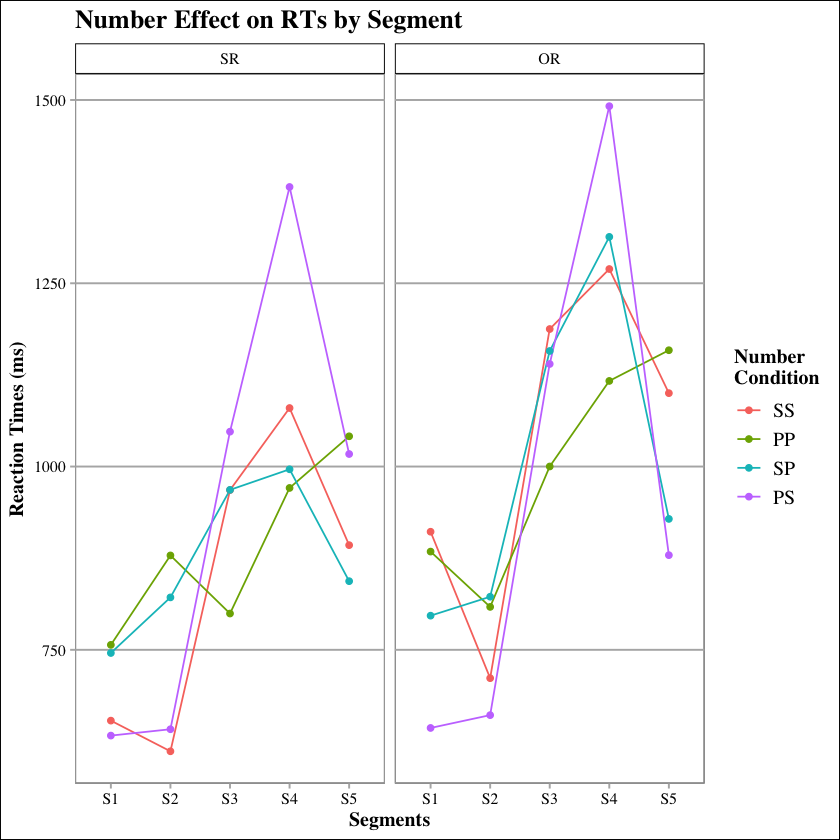

library(tidyverse)
library(lmerTest)
library(ggthemes)
library(gt)
library(broom.mixed)
library(IRdisplay)Data Analysis: Self-Paced Reading Task
Research Questions and Predictions
Research questions:
Are object relative clauses (ORs) parsed slower than subject relative clauses (SRs) by adult Spanish-English bilinguals?
If so, does number mismatch between the two determiner phrases (DPs) facilitate their comprehension?
Predictions:
Adult Spanish-English bilinguals will show shorter reaction times (RTs) in SRs than in ORs.
Number mismatch between the two DPs will result in shorter RTs in ORs than number match.
RT Data Analysis
This is a step by step guide on how the data collected by the self-paced reading task has been analyzed.
1. Library Loading
The following libraries are imported:
tidyverse, for cleaner data wrangling functions and access to other included packages, such asggplot2.ggthemes, to access the themetheme_calc().lmerTest, for more powerful mixed regression models.gt, for table creation functions.broom.mixed, for converting mixed model output into data frames.IRdispplay, for displaying tables in Jupyter Notebook
theme_set(
theme_calc(
base_size = 12,
base_family = "Times"
) +
theme(
plot.title = element_text(face = "bold"),
axis.title.x = element_text(face = "bold"),
axis.title.y = element_text(face = "bold"),
legend.title = element_text(face = "bold")
)
)2. Importing and Processing Data
Importing Questionnaire Data
df_part <- read.csv("./data/part_data.csv")
df_part$part_name <- NULL
df_part$part_mail <- NULL
head(df_part)| X...part_id | part_experiment | part_age | part_lang | part_impaired. | part_abroad | part_certificate | part_cat_exp | part_cat_pro | part_eng_exp | part_eng_pro | part_spa_exp | part_spa_pro | part_eng_onset_method | part_eng_onset_time | Status | part_date | |
|---|---|---|---|---|---|---|---|---|---|---|---|---|---|---|---|---|---|
| <int> | <chr> | <chr> | <chr> | <chr> | <chr> | <chr> | <chr> | <chr> | <chr> | <chr> | <chr> | <chr> | <chr> | <int> | <chr> | <chr> | |
| 1 | 22 | Pilot | 26 - 30 | Catalan, English, Spanish | No | No | B2 (First) | < 1h | < 1h | 1h - 3h | 1h - 3h | > 5h | > 5h | At school | 5 | Accepted | |
| 2 | 21 | Pilot | 26 - 30 | Catalan, Spanish | No | No | C2 (Proficiency) | 1h - 3h | 1h - 3h | > 5h | > 5h | > 5h | > 5h | At school | 6 | Accepted | |
| 3 | 20 | Pilot | 18 - 25 | Catalan, Spanish | No | No | B2 (First) | < 1h | < 1h | < 1h | < 1h | > 5h | > 5h | At school | 8 | Accepted | |
| 4 | 26 | Practicum | 18 - 25 | Catalan, Spanish | No | Yes | C1 (Advanced) | > 5h | > 5h | 1h - 3h | < 1h | 3h - 5h | 3h - 5h | At school | 4 | Scheduled | May 17, 2025 10:00 (GMT+2) |
| 5 | 34 | TFG | 18 - 25 | Catalan, Spanish | No | No | B2 (First) | 1h - 3h | 1h - 3h | 3h - 5h | 3h - 5h | 3h - 5h | 3h - 5h | At school | 6 | Scheduled | May 7, 2025 11:00 (GMT+2) |
| 6 | 33 | TFG | 18 - 25 | Catalan, English, Spanish | No | Yes | C1 (Advanced) | < 1h | < 1h | > 5h | 3h - 5h | > 5h | > 5h | At home | 0 | Scheduled | May 6, 2025 13:00 (GMT+2) |
Cleaning Questionnaire Data
df_part <- df_part %>%
select(part_experiment, X...part_id, part_lang, part_impaired., part_abroad, part_certificate, part_cat_exp, part_cat_pro, part_spa_exp, part_spa_pro, part_eng_exp, part_eng_pro, part_eng_onset_time) %>%
mutate(
part_experiment = as.factor(part_experiment),
X...part_id = as.factor(X...part_id),
part_lang = as.factor(part_lang),
part_impaired. = as.factor(part_impaired.),
part_abroad = as.factor(part_abroad),
part_certificate = as.factor(part_certificate),
part_cat_exp = as.factor(part_cat_exp),
part_cat_pro = as.factor(part_cat_pro),
part_spa_exp = as.factor(part_spa_exp),
part_spa_pro = as.factor(part_cat_pro),
part_eng_exp = as.factor(part_eng_exp),
part_eng_pro = as.factor(part_eng_pro)
) %>%
filter(part_experiment == "TFG") %>%
rename(part_id = X...part_id) %>%
droplevels()
df_part$part_experiment <- NULL
head(df_part, 10)| part_id | part_lang | part_impaired. | part_abroad | part_certificate | part_cat_exp | part_cat_pro | part_spa_exp | part_spa_pro | part_eng_exp | part_eng_pro | part_eng_onset_time | |
|---|---|---|---|---|---|---|---|---|---|---|---|---|
| <fct> | <fct> | <fct> | <fct> | <fct> | <fct> | <fct> | <fct> | <fct> | <fct> | <fct> | <int> | |
| 1 | 34 | Catalan, Spanish | No | No | B2 (First) | 1h - 3h | 1h - 3h | 3h - 5h | 1h - 3h | 3h - 5h | 3h - 5h | 6 |
| 2 | 33 | Catalan, English, Spanish | No | Yes | C1 (Advanced) | < 1h | < 1h | > 5h | < 1h | > 5h | 3h - 5h | 0 |
| 3 | 32 | Catalan, Spanish | No | No | C1 (Advanced) | > 5h | > 5h | 3h - 5h | > 5h | 1h - 3h | 1h - 3h | 6 |
| 4 | 31 | Catalan, Spanish | No | No | C1 (Advanced) | 1h - 3h | > 5h | 3h - 5h | > 5h | 1h - 3h | < 1h | 10 |
| 5 | 29 | Spanish | No | No | C2 (Proficiency) | < 1h | < 1h | > 5h | < 1h | > 5h | 1h - 3h | 6 |
Importing Task Data
First, an example is imported to inspect the data set’s variables and their data types.
df_example <- read.csv("./data/32.csv")
head(df_example, 10)| rt | response | trial_type | trial_index | plugin_version | time_elapsed | part_id | task | item_number | item_type | segment | clause_type | number | stimulus | question | correct_answer | part_answer | correct | |
|---|---|---|---|---|---|---|---|---|---|---|---|---|---|---|---|---|---|---|
| <int> | <chr> | <chr> | <int> | <chr> | <int> | <int> | <chr> | <chr> | <chr> | <chr> | <chr> | <chr> | <chr> | <chr> | <chr> | <chr> | <int> | |
| 1 | 2322825 | {"part_id":"32"} | survey-html-form | 0 | 2.0.0 | 2325458 | 32 | NA | ||||||||||
| 2 | 1536 | html-keyboard-response | 2 | 2.0.0 | 2368979 | 32 | item | null | pr_item | s0 | sr | ss | <p class="trial-stimulus">_______ | ____ | _______ | _______ | ____</p> | NA | ||||
| 3 | 1222 | html-keyboard-response | 3 | 2.0.0 | 2370201 | 32 | item | null | pr_item | s1 | sr | ss | <p class="trial-stimulus">The cat | ____ | _______ | _______ | ____</p> | NA | ||||
| 4 | 1408 | html-keyboard-response | 4 | 2.0.0 | 2371610 | 32 | item | null | pr_item | s2 | sr | ss | <p class="trial-stimulus">_______ | that | _______ | _______ | ____</p> | NA | ||||
| 5 | 1249 | html-keyboard-response | 5 | 2.0.0 | 2372859 | 32 | item | null | pr_item | s3 | sr | ss | <p class="trial-stimulus">_______ | ____ | watches | _______ | ____</p> | NA | ||||
| 6 | 1102 | html-keyboard-response | 6 | 2.0.0 | 2373964 | 32 | item | null | pr_item | s4 | sr | ss | <p class="trial-stimulus">_______ | ____ | _______ | the dog | ____</p> | NA | ||||
| 7 | 2405 | html-keyboard-response | 7 | 2.0.0 | 2376370 | 32 | item | null | pr_item | s5 | sr | ss | <p class="trial-stimulus">_______ | ____ | _______ | _______ | eats</p> | false | NA | |||
| 8 | 1727 | html-keyboard-response | 9 | 2.0.0 | 2378602 | 32 | item | null | pr_item | s0 | or | ss | <p class="trial-stimulus">_________ | ____ | _________ | _____ | ______</p> | NA | ||||
| 9 | 1111 | html-keyboard-response | 10 | 2.0.0 | 2379714 | 32 | item | null | pr_item | s1 | or | ss | <p class="trial-stimulus">The horse | ____ | _________ | _____ | ______</p> | NA | ||||
| 10 | 968 | html-keyboard-response | 11 | 2.0.0 | 2380683 | 32 | item | null | pr_item | s2 | or | ss | <p class="trial-stimulus">_________ | that | _________ | _____ | ______</p> | NA |
Having done this, now we know which are the specific names of each variable, which ones are of interest and the data type of their values.
We can now proceed to creating the full data set will all our participants’ data. This is done by importing them and passing them through the reduce() function, which combines all the CSV files into a single data set. The keyword rbind makes sure that the individual data sets are merged as additional rows.
Note that only the following columns are selected:
part_id, for the participants’ ID number.task, for the kind of trial, item or question.item_number, for the items’ ID number.item_type, for the type of item, experimental, practice or filler.clause_type, for the type fo clause, OR or SR.number, for the number condition, singular-singular (SS), plural-plural (PP), singular-plural (SP) or plural-singular (PS).segment, for the segment ID.rt, for the RTs.correct, for the accuracy of their responses to question tasks.
df_raw <- reduce(
list(
select(read.csv("./data/29.csv"), part_id, task, item_number, item_type, clause_type, number, segment, rt, correct),
select(read.csv("./data/31.csv"), part_id, task, item_number, item_type, clause_type, number, segment, rt, correct),
select(read.csv("./data/32.csv"), part_id, task, item_number, item_type, clause_type, number, segment, rt, correct)
),
rbind
)
head(df_raw, 10)| part_id | task | item_number | item_type | clause_type | number | segment | rt | correct | |
|---|---|---|---|---|---|---|---|---|---|
| <int> | <chr> | <chr> | <chr> | <chr> | <chr> | <chr> | <int> | <int> | |
| 1 | 29 | 2413859 | NA | ||||||
| 2 | 29 | item | null | pr_item | sr | ss | s0 | 2521 | NA |
| 3 | 29 | item | null | pr_item | sr | ss | s1 | 405 | NA |
| 4 | 29 | item | null | pr_item | sr | ss | s2 | 368 | NA |
| 5 | 29 | item | null | pr_item | sr | ss | s3 | 350 | NA |
| 6 | 29 | item | null | pr_item | sr | ss | s4 | 382 | NA |
| 7 | 29 | item | null | pr_item | sr | ss | s5 | 376 | NA |
| 8 | 29 | item | null | pr_item | or | ss | s0 | 1004 | NA |
| 9 | 29 | item | null | pr_item | or | ss | s1 | 414 | NA |
| 10 | 29 | item | null | pr_item | or | ss | s2 | 408 | NA |
Cleaning Task Data
After that, the data is cleaned.
Firstly, the rows are ordered by the participants’ ID number with the order() function.
Secondly, the observations are filtered using the filter() function, keeping only those that involve experimental items and excluding question tasks.
Then, the function mutate() is used to transform the data types. item_number is transformed to numeric. The rest are transformed to factors.
Additionally, a new column matching is created which groups match and mismatch conditions.
Lastly, the relocate() function is used to make the matching column follow the number one.
df_clean <- df_raw %>%
.[order(.$part_id), ] %>%
filter(.$item_type == "exp_item" & .$task == "item" & segment != "s0") %>%
mutate(
item_number = as.numeric(item_number),
task = as.factor(task),
item_type = as.factor(item_type),
clause_type = factor(clause_type, levels = c("sr", "or"), labels = c("SR", "OR")),
number = factor(number, levels = c("ss", "pp", "sp", "ps"), labels = c("SS", "PP", "SP", "PS")),
matching = factor(ifelse(number == "SS" | number == "PP", "match", "mismatch"), labels = c("Match", "Mismatch")),
segment = factor(segment, labels = c("S1", "S2", "S3", "S4", "S5")),
part_id = as.factor(part_id),
) %>%
relocate(matching, .after = number) %>%
droplevels()
summary(df_clean)
head(df_clean, 10) part_id task item_number item_type clause_type number
29:160 item:480 Min. :1.00 exp_item:480 SR:240 SS:120
31:160 1st Qu.:3.25 OR:240 PP:120
32:160 Median :5.50 SP:120
Mean :5.00 PS:120
3rd Qu.:7.25
Max. :8.00
matching segment rt correct
Match :240 S1:96 Min. : 215.0 Min. : NA
Mismatch:240 S2:96 1st Qu.: 611.8 1st Qu.: NA
S3:96 Median : 883.0 Median : NA
S4:96 Mean :1134.4 Mean :NaN
S5:96 3rd Qu.:1296.0 3rd Qu.: NA
Max. :6609.0 Max. : NA
NA's :480 | part_id | task | item_number | item_type | clause_type | number | matching | segment | rt | correct | |
|---|---|---|---|---|---|---|---|---|---|---|
| <fct> | <fct> | <dbl> | <fct> | <fct> | <fct> | <fct> | <fct> | <int> | <int> | |
| 1 | 29 | item | 8 | exp_item | OR | PP | Match | S1 | 719 | NA |
| 2 | 29 | item | 8 | exp_item | OR | PP | Match | S2 | 548 | NA |
| 3 | 29 | item | 8 | exp_item | OR | PP | Match | S3 | 800 | NA |
| 4 | 29 | item | 8 | exp_item | OR | PP | Match | S4 | 1176 | NA |
| 5 | 29 | item | 8 | exp_item | OR | PP | Match | S5 | 1303 | NA |
| 6 | 29 | item | 4 | exp_item | OR | SP | Mismatch | S1 | 688 | NA |
| 7 | 29 | item | 4 | exp_item | OR | SP | Mismatch | S2 | 607 | NA |
| 8 | 29 | item | 4 | exp_item | OR | SP | Mismatch | S3 | 1071 | NA |
| 9 | 29 | item | 4 | exp_item | OR | SP | Mismatch | S4 | 1832 | NA |
| 10 | 29 | item | 4 | exp_item | OR | SP | Mismatch | S5 | 2768 | NA |
Normalizing
With the data looking like it should, now it is time to check for normal distribution. A plot is created that holds the data as it is.
skewed_plot <- df_clean %>%
ggplot(aes(x = rt)) +
geom_histogram(aes(y = ..density..)) +
stat_function(
fun = dnorm,
args = list(mean = mean(df_clean$rt), sd = sd(df_clean$rt)),
color = "blue",
linewidth = 1
)
skewed_plot`stat_bin()` using `bins = 30`. Pick better value with `binwidth`.

The first strategy to normalize the data is removing extreme values, or outliers, which might be causing the data to be left-skewed.
q1 <- quantile(df_clean$rt, 0.25)
q3 <- quantile(df_clean$rt, 0.75)
iqr <- q3 - q1
lower_limit <- q1 - iqr * 1.5
upper_limit <- q3 + iqr * 1.5
df_clean <- df_clean %>%
filter(.$rt > lower_limit & .$rt < upper_limit)
no_outlier_plot <- df_clean %>%
ggplot(aes(x = rt)) +
geom_histogram(aes(y = ..density..)) +
stat_function(
fun = dnorm,
args = list(mean = mean(df_clean$rt), sd = sd(df_clean$rt)),
color = "blue",
linewidth = 1
)
no_outlier_plot`stat_bin()` using `bins = 30`. Pick better value with `binwidth`.

A second strategy that can be performed to further normalize the data is converting the continuos variable, RTs, into a logarithmic scale.
df_clean <- df_clean %>%
mutate(rt = log(rt))
normal_plot <- df_clean %>%
ggplot(aes(x = rt)) +
geom_histogram(aes(y = ..density..)) +
stat_function(
fun = dnorm,
args = list(mean = mean(df_clean$rt), sd = sd(df_clean$rt)),
color = "blue",
linewidth = 1
)
normal_plot`stat_bin()` using `bins = 30`. Pick better value with `binwidth`.

Checking normality.
shapiro.test(df_clean$rt)
qq_plot <- df_clean %>%
ggplot(aes(sample = rt)) +
stat_qq() +
stat_qq_line(color = "blue") +
labs(title = "QQ Plot of RTs", x = "Theoretical Quantiles", y = "Sample Quantiles")
qq_plot
Shapiro-Wilk normality test
data: df_clean$rt
W = 0.99009, p-value = 0.004922
Merging Experiment and Participant Data Sets
df_part$part_experiment <- NULL
df_merged <- merge(df_clean, df_part, by = "part_id")
head(df_merged, 10)| part_id | task | item_number | item_type | clause_type | number | matching | segment | rt | correct | ... | part_impaired. | part_abroad | part_certificate | part_cat_exp | part_cat_pro | part_spa_exp | part_spa_pro | part_eng_exp | part_eng_pro | part_eng_onset_time | |
|---|---|---|---|---|---|---|---|---|---|---|---|---|---|---|---|---|---|---|---|---|---|
| <fct> | <fct> | <dbl> | <fct> | <fct> | <fct> | <fct> | <fct> | <dbl> | <int> | ... | <fct> | <fct> | <fct> | <fct> | <fct> | <fct> | <fct> | <fct> | <fct> | <int> | |
| 1 | 29 | item | 8 | exp_item | OR | PP | Match | S1 | 6.577861 | NA | ... | No | No | C2 (Proficiency) | < 1h | < 1h | > 5h | < 1h | > 5h | 1h - 3h | 6 |
| 2 | 29 | item | 8 | exp_item | OR | PP | Match | S2 | 6.306275 | NA | ... | No | No | C2 (Proficiency) | < 1h | < 1h | > 5h | < 1h | > 5h | 1h - 3h | 6 |
| 3 | 29 | item | 8 | exp_item | OR | PP | Match | S3 | 6.684612 | NA | ... | No | No | C2 (Proficiency) | < 1h | < 1h | > 5h | < 1h | > 5h | 1h - 3h | 6 |
| 4 | 29 | item | 8 | exp_item | OR | PP | Match | S4 | 7.069874 | NA | ... | No | No | C2 (Proficiency) | < 1h | < 1h | > 5h | < 1h | > 5h | 1h - 3h | 6 |
| 5 | 29 | item | 8 | exp_item | OR | PP | Match | S5 | 7.172425 | NA | ... | No | No | C2 (Proficiency) | < 1h | < 1h | > 5h | < 1h | > 5h | 1h - 3h | 6 |
| 6 | 29 | item | 4 | exp_item | OR | SP | Mismatch | S1 | 6.533789 | NA | ... | No | No | C2 (Proficiency) | < 1h | < 1h | > 5h | < 1h | > 5h | 1h - 3h | 6 |
| 7 | 29 | item | 4 | exp_item | OR | SP | Mismatch | S2 | 6.408529 | NA | ... | No | No | C2 (Proficiency) | < 1h | < 1h | > 5h | < 1h | > 5h | 1h - 3h | 6 |
| 8 | 29 | item | 4 | exp_item | OR | SP | Mismatch | S3 | 6.976348 | NA | ... | No | No | C2 (Proficiency) | < 1h | < 1h | > 5h | < 1h | > 5h | 1h - 3h | 6 |
| 9 | 29 | item | 4 | exp_item | OR | SP | Mismatch | S4 | 7.513164 | NA | ... | No | No | C2 (Proficiency) | < 1h | < 1h | > 5h | < 1h | > 5h | 1h - 3h | 6 |
| 10 | 29 | item | 4 | exp_item | OR | PP | Match | S1 | 6.981935 | NA | ... | No | No | C2 (Proficiency) | < 1h | < 1h | > 5h | < 1h | > 5h | 1h - 3h | 6 |
3. RQ1: Clause Type Effects
Three regression models are created using the lmer() function.
lm_clausechecks for the correlation between RTs and clause type. Significantly higher RTs are expected for ORs.lm_matchingchecks for the interaction between clause type and matching on RTs. A significant effect of mismatch condition is expected in ORs but not in SRs.lm_segmentchecks for the interaction between clause type and segment on RTs. A significant effect of clause type is expected in segments 3, 4 and 5. The rest are filtered out.
Regression Model
lm_clause <- lmer(data = df_merged, rt ~ clause_type + (1 | part_eng_pro) + (1 | part_eng_exp))
summary(lm_clause)Linear mixed model fit by REML. t-tests use Satterthwaite's method [
lmerModLmerTest]
Formula: rt ~ clause_type + (1 | part_eng_pro) + (1 | part_eng_exp)
Data: df_merged
REML criterion at convergence: 544.4
Scaled residuals:
Min 1Q Median 3Q Max
-2.55242 -0.70771 -0.09349 0.59322 2.59498
Random effects:
Groups Name Variance Std.Dev.
part_eng_pro (Intercept) 0.01954 0.1398
part_eng_exp (Intercept) 0.05972 0.2444
Residual 0.19710 0.4440
Number of obs: 436, groups: part_eng_pro, 2; part_eng_exp, 2
Fixed effects:
Estimate Std. Error df t value Pr(>|t|)
(Intercept) 6.57915 0.20174 1.55175 32.612 0.00346 **
clause_typeOR 0.11003 0.04259 431.92416 2.584 0.01011 *
---
Signif. codes: 0 '***' 0.001 '**' 0.01 '*' 0.05 '.' 0.1 ' ' 1
Correlation of Fixed Effects:
(Intr)
claus_typOR -0.100Table
lm_clause_tidy <- lm_clause %>%
tidy() %>%
filter(effect == "fixed") %>%
mutate(
p.value = case_when(
p.value < 0.001 ~ "< 0.001",
p.value < 0.01 ~ "< 0.01",
p.value < 0.05 ~ "< 0.05",
p.value > 0.05 ~ "> 0.05",
),
term = case_when(
term == "(Intercept)" ~ "SR (Intercept)",
term == "clause_typeOR" ~ "OR",
term == "segmentS2" ~ "S2",
term == "segmentS3" ~ "S3",
term == "segmentS4" ~ "S4",
term == "segmentS5" ~ "S5",
term == "segmentS2" ~ "S2",
term == "clause_typeOR:segmentS2" ~ "SR * S2",
term == "clause_typeOR:segmentS3" ~ "SR * S3",
term == "clause_typeOR:segmentS4" ~ "SR * S4",
term == "clause_typeOR:segmentS5" ~ "SR * S5",
),
code = case_when(
p.value == "< 0.001" ~ "***",
p.value == "< 0.01" ~ "**",
p.value == "< 0.05" ~ "*",
p.value == "> 0.05" ~ " "
)
)
lm_clause_tidy| effect | group | term | estimate | std.error | statistic | df | p.value | code |
|---|---|---|---|---|---|---|---|---|
| <chr> | <chr> | <chr> | <dbl> | <dbl> | <dbl> | <dbl> | <chr> | <chr> |
| fixed | NA | SR (Intercept) | 6.5791499 | 0.20174159 | 32.611768 | 1.551751 | < 0.01 | ** |
| fixed | NA | OR | 0.1100343 | 0.04258973 | 2.583588 | 431.924165 | < 0.05 | * |
lm_clause_table <- lm_clause_tidy %>%
gt() %>%
cols_hide(columns = c(effect, group, df)) %>%
tab_options(
table.font.names = "Times",
table.font.size = 12,
table.width = 600,
heading.title.font.size = 12,
heading.subtitle.font.size = 12
) %>%
tab_header(
title = md("**Mixed Model Results**"),
subtitle = md("**Clause Type**")
) %>%
cols_label(
term = "Condition",
estimate = "Estimate",
std.error = "Std. Error",
statistic = md("*t*-value"),
p.value = md("*p*-value"),
code = "Signif. Code"
) %>%
fmt_number(
columns = c(term, estimate, std.error, statistic, p.value),
decimals = 3
)
display_html(as_raw_html(lm_clause_table))
gtsave(lm_clause_table, filename = "clause_type_table.png", path = "plots/")| Mixed Model Results | |||||
|---|---|---|---|---|---|
| Clause Type | |||||
| Condition | Estimate | Std. Error | t-value | p-value | Signif. Code |
file:////var/folders/l7/2mdpz2wn395f0w8khq_kf29h0000gn/T//Rtmp7sUZnC/file88a61fdf1ab.html screenshot completed
Plots
lm_clause_plot <- df_merged %>%
ggplot(aes(y = exp(rt), x = clause_type, color = clause_type, fill = clause_type)) +
geom_boxplot(show.legend = FALSE, staplewidth = 0.5, notch = TRUE, alpha = 0.5) +
labs(
title = "Clause Type Effects on RTs",
x = "Clause Type",
y = "Reaction Times (ms)"
)
lm_clause_plot
ggsave(filename = "lm_clause_plot.svg", path = "plots/", height = 5, width = 10)
lm_clause_segment_plot <- df_clean %>%
ggplot(aes(y = exp(rt), x = segment, color = clause_type, group = clause_type)) +
stat_summary(fun = mean, geom = "line", linewidth = 1) +
stat_summary(fun = mean, geom = "point", size = 2, shape = 21, stroke = 1, fill = "white") +
labs(
title = "Clause Type Effects on RTs by Segment",
x = "Segments",
y = "Reaction Times (ms)",
color = "Clause Type"
)
lm_clause_segment_plot
ggsave(filename = "lm_clause_segment_plot.svg", path = "plots/", height = 5, width = 10)
4. RQ2: Number Effects
Regression Model
lm_number <- lmer(data = df_merged, rt ~ number + (1 | part_eng_exp) + (1 | part_eng_pro))
summary(lm_number)Linear mixed model fit by REML. t-tests use Satterthwaite's method [
lmerModLmerTest]
Formula: rt ~ number + (1 | part_eng_exp) + (1 | part_eng_pro)
Data: df_merged
REML criterion at convergence: 557.7
Scaled residuals:
Min 1Q Median 3Q Max
-2.59194 -0.72759 -0.06875 0.59979 2.71801
Random effects:
Groups Name Variance Std.Dev.
part_eng_exp (Intercept) 0.05967 0.2443
part_eng_pro (Intercept) 0.01920 0.1386
Residual 0.20067 0.4480
Number of obs: 436, groups: part_eng_exp, 2; part_eng_pro, 2
Fixed effects:
Estimate Std. Error df t value Pr(>|t|)
(Intercept) 6.61916 0.20372 1.61888 32.492 0.00285 **
numberPP 0.04135 0.06083 429.92481 0.680 0.49702
numberSP 0.01931 0.06084 429.95182 0.317 0.75104
numberPS -0.01125 0.06069 429.92214 -0.185 0.85304
---
Signif. codes: 0 '***' 0.001 '**' 0.01 '*' 0.05 '.' 0.1 ' ' 1
Correlation of Fixed Effects:
(Intr) nmbrPP nmbrSP
numberPP -0.150
numberSP -0.148 0.502
numberPS -0.150 0.504 0.503Table
lm_number_tidy <- lm_number %>%
tidy() %>%
filter(effect == "fixed") %>%
mutate(
p.value = case_when(
p.value < 0.001 ~ "< 0.001",
p.value < 0.01 ~ "< 0.01",
p.value < 0.05 ~ "< 0.05",
p.value > 0.05 ~ "> 0.05",
),
term = case_when(
term == "(Intercept)" ~ "SS (Intercept)",
term == "clause_typeOR" ~ "OR",
term == "numberPP" ~ "PP",
term == "numberSP" ~ "SP",
term == "numberPS" ~ "PS",
term == "clause_typeOR:numberPP" ~ "OR * PP",
term == "clause_typeOR:numberSP" ~ "OR * SP",
term == "clause_typeOR:numberPS" ~ "OR * PS",
),
code = case_when(
p.value == "< 0.001" ~ "***",
p.value == "< 0.01" ~ "**",
p.value == "< 0.05" ~ "*",
p.value == "> 0.05" ~ " "
)
)
lm_number_tidy| effect | group | term | estimate | std.error | statistic | df | p.value | code |
|---|---|---|---|---|---|---|---|---|
| <chr> | <chr> | <chr> | <dbl> | <dbl> | <dbl> | <dbl> | <chr> | <chr> |
| fixed | NA | SS (Intercept) | 6.61915927 | 0.20371527 | 32.4922100 | 1.618882 | < 0.01 | ** |
| fixed | NA | PP | 0.04135171 | 0.06083255 | 0.6797629 | 429.924811 | > 0.05 | |
| fixed | NA | SP | 0.01931445 | 0.06083933 | 0.3174665 | 429.951822 | > 0.05 | |
| fixed | NA | PS | -0.01124877 | 0.06068724 | -0.1853565 | 429.922138 | > 0.05 |
lm_number_table <- lm_number_tidy %>%
gt() %>%
cols_hide(columns = c(effect, group, df)) %>%
tab_options(
table.font.names = "Times",
table.font.size = 12,
table.width = 600,
heading.title.font.size = 12,
heading.subtitle.font.size = 12
) %>%
tab_header(
title = md("**Mixed Model Results**"),
subtitle = md("**Number Condition**")
) %>%
cols_label(
term = "Condition",
estimate = "Estimate",
std.error = "Std. Error",
statistic = md("*t*-value"),
p.value = md("*p*-value"),
code = "Signif. Code"
) %>%
fmt_number(
columns = c(term, estimate, std.error, statistic, p.value),
decimals = 3
)
display_html(as_raw_html(lm_number_table))
gtsave(lm_number_table, filename = "number_table.png", path = "plots/")| Mixed Model Results | |||||
|---|---|---|---|---|---|
| Number Condition | |||||
| Condition | Estimate | Std. Error | t-value | p-value | Signif. Code |
file:////var/folders/l7/2mdpz2wn395f0w8khq_kf29h0000gn/T//Rtmp7sUZnC/file88acb91cdc.html screenshot completed
Plots
lm_number_plot <- df_clean %>%
ggplot(aes(y = exp(rt), x = matching, color = number)) +
geom_boxplot(notch = TRUE, staplewidth = 0.5) +
facet_wrap(df_clean$clause_type) +
labs(
title = "Number Effects on RTs",
x = "Number Condition",
y = "Reaction Times (ms)",
color = "Number\nCondition"
)
lm_number_plot
lm_number_plot2 <- df_clean %>%
ggplot(aes(y = exp(rt), x = segment, color = number, group = number)) +
stat_summary(fun = mean, geom = "line") +
stat_summary(fun = mean, geom = "point") +
facet_wrap(df_clean$clause_type) +
labs(
title = "Number Effect on RTs by Segment",
x = "Segments",
y = "Reaction Times (ms)",
color = "Number\nCondition"
)
lm_number_plot2